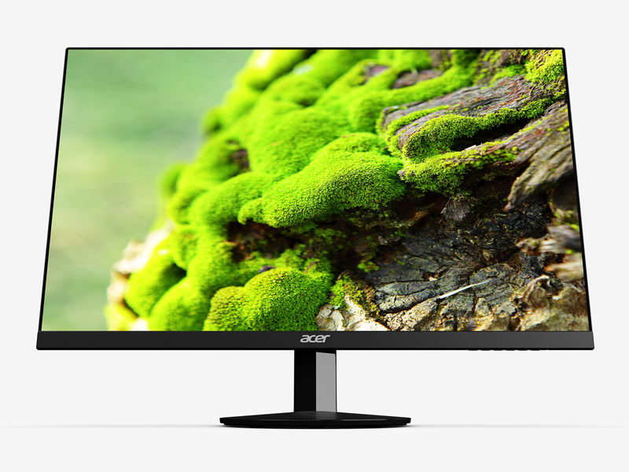
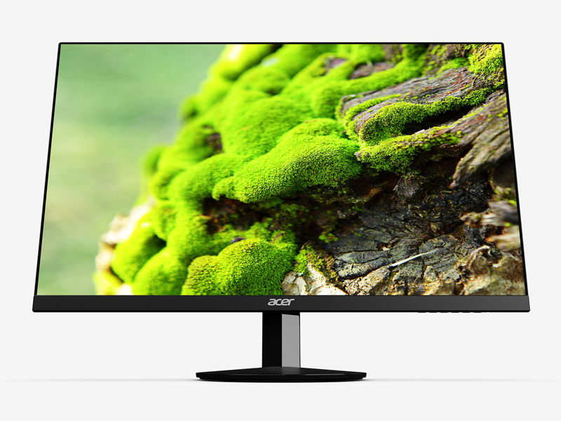

166.82$ incluido el envio
-
Tamaño: 21.5 inch
-
Resolution FHD 1080p
-
Tecnología de pantalla LCD
La pantalla IPS de pantalla ancha Acer SB220Q de 21,5 "combina una elegante funcionalidad ultradelgada con una asombrosa resolución de 1920 x 1080, lo que le permite disfrutar del entretenimiento y los juegos de alta definición en la comodidad de su hogar. AMD Radeon FreeSync y un rápido tiempo de respuesta de 4 ms destacan la tecnología avanzada .